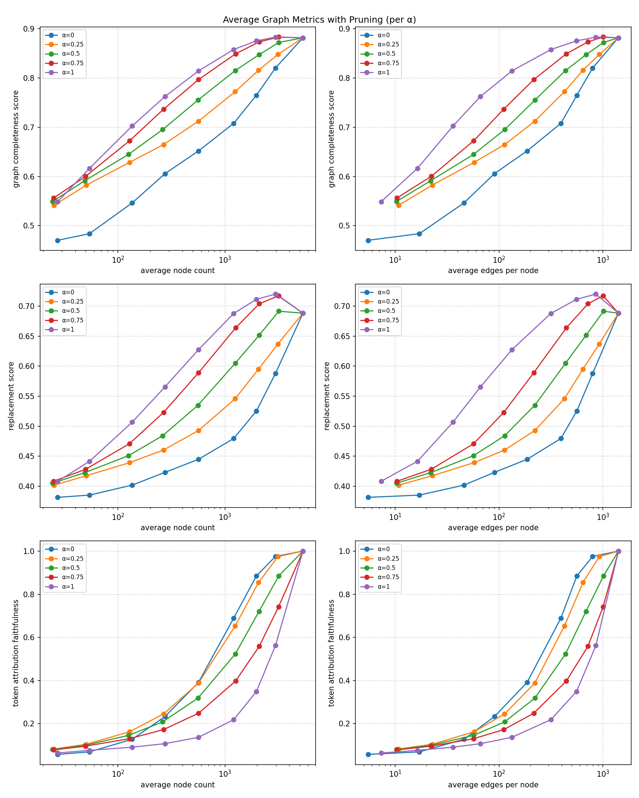
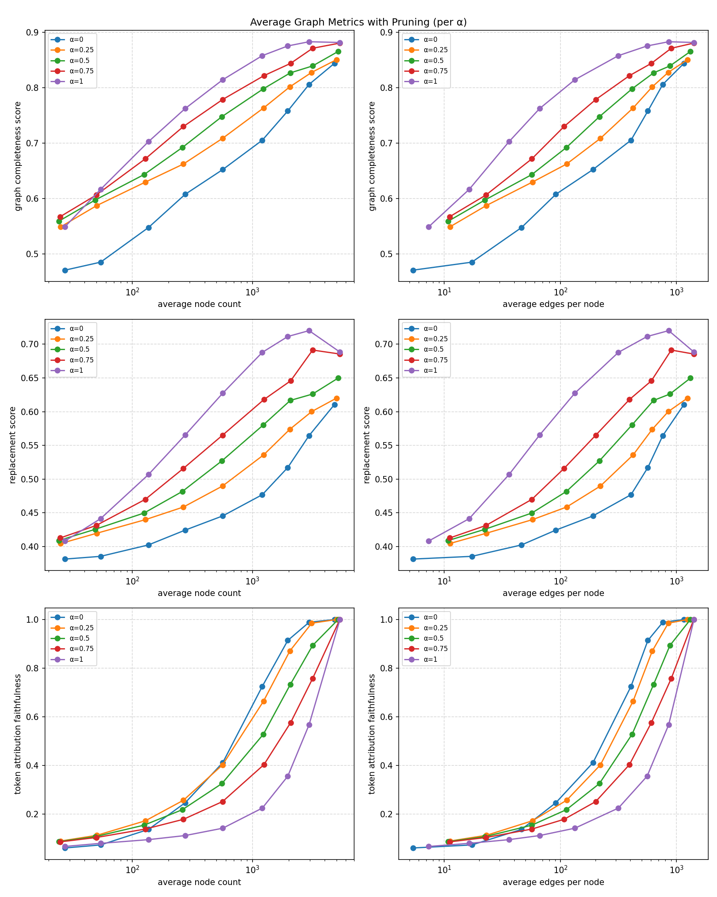

100 analogies graphs · α ∈ {0, .25, .5, .75, 1} · node_threshold ∈ {.01,.02,.05,.1,.2,.4,.6,.8,1} · SHAP norm ∈ {softmax, entmax} · 9,000 cells · 0 failures · 2026-06-07
α controls the influence↔relevance mix in the combined prune score
(α·influence + (1−α)·relevance, geometric/rank). The sweep reveals a clean
tradeoff with no universal winner:
softmax and entmax token-normalizations give near-identical curve shapes (entmax slightly lower completeness at thr=1.0 because it zeroes more tokens).


Left column of each: metric vs average node count (log x). Right column: metric vs average edges-per-node. Rows: completeness, replacement, token-attribution-faithfulness.
nodes = avg node count; compl = completeness; repl = replacement; taf = token-attribution-faithfulness.
| α | thr | nodes | compl | repl | taf | read |
|---|---|---|---|---|---|---|
| 0.00 | 0.01 | 27.4 | 0.470 | 0.381 | 0.0576 | smallest graphs |
| 1.00 | 0.01 | 27.4 | 0.549 | 0.408 | 0.0640 | |
| 0.00 | 0.20 | 565.8 | 0.652 | 0.445 | 0.3911 | α flips winner ↓ |
| 1.00 | 0.20 | 565.8 | 0.815 | 0.627 | 0.1367 | |
| 0.00 | 0.40 | 1207 | 0.708 | 0.479 | 0.6895 | relevance vs influence |
| 1.00 | 0.40 | 1207 | 0.858 | 0.688 | 0.2185 | |
| 0.50 | 0.40 | 1247 | 0.815 | 0.605 | 0.5226 | balanced α |
| — | 1.00 | 5354 | 0.882 | 0.688 | 1.0000 | full graph (all α) |
Full 9,000-row data: eval_outputs/prune/analogies_alpha_sweep/{results.json, summary.csv}.
The two backward metrics (completeness, replacement) are computed from influence flowing back from the target logit, so they mechanically favour the influence term (high α). Token-attribution-faithfulness measures how much of each input token's forward relevance to the target survives pruning, so it favours the relevance term (low α). This is the expected signature of a genuine influence/relevance blend — neither end is strictly better, which is the argument for keeping both terms rather than pruning on influence alone.
Caveat (circularity): token-attribution-faithfulness is weighted by the same SHAP token weights used to build the relevance seed, so the low-α advantage on taf is partly self-fulfilling. Treat the completeness/replacement curves as the more independent evidence, and taf as a diagnostic of how much token-relevance the prune retains.
':' while the graph mask flagged it special). Resolved by reverting summarization/token_attribution.py to bfa1a50, which matches how shap_values.json was generated (only <bos> special).prune_graphs.py → eval_prune.py) saves ~140 MB per PruneGraph; a 9,000-cell sweep needs ~0.5 TB and crashed the disk at 100%. Replaced with the fused in-memory script eval/prune_eval_fused.py (prune → metric → row; ~5 MB total output).cuda:0, per-graph GraphCache to bound GPU memory; ~55 min wall.plans/pruning_threshold_validation.html).